Chapter 6Model Pre-training
Abstract Training large language models (LLMs) presents significantly greater challenges compared to traditional language models, primarily due to the massive number of parameters involved. This chapter delves into effective strategies for pre-training LLMs, a critical phase in their development. We begin by exploring three fundamental pre-training tasks: language modeling, denoising autoencoding, and mixture-of-denoisers, with a particular focus on language modeling and its two key variants-prefix language modeling and fill-in-the-middle tasks. This provides a foundational understanding of the core mechanisms driving large language model development. To illustrate these concepts, we provide example code for training the LLaMA model.
Next, we delve into various optimization settings essential for training LLMs, including batch-based training, learning rate configuration, and practical insights for their effective implementation. We then introduce scalable training techniques, including 3D parallel training, the zero-redundancy optimizer, activation recomputation, and mixed-precision training. For 3D parallel training, we conduct a thorough comparison of different parallelization strategies, including data parallelism, pipeline parallelism, and tensor parallelism, highlighting their respective strengths and trade-offs.
Additionally, we address the practical aspects of running LLMs, such as calculating the number of parameters and estimating memory costs, presented in a clear, step-by-step manner. Finally, we conclude with a simplified pre-training code practice that integrates the discussed techniques, demonstrating how to construct an end-to-end pre-training pipeline for LLMs. This chapter aims to provide a basic guideline for researchers and practitioners seeking to navigate the intricate landscape of LLM pre-training.
The previous chapters have thoroughly introduced the preparation of pre-training data (Chap. 4) and the model architecture (Chap. 5). This chapter will focus on how to conduct pre-training for large language models (LLMs). First, the pre-training tasks
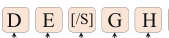
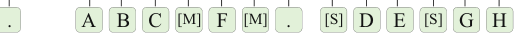
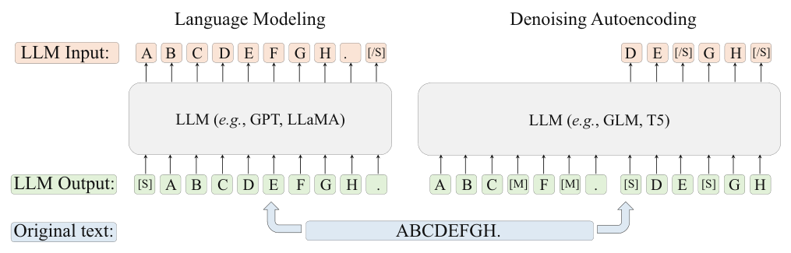
for text modeling will be introduced (Sect. 6.1), followed by the training optimization setup (Sect. 6.2) and scalable training techniques (Sect. 6.3). Finally, we will present the efficiency analysis (Sect. 6.4) and code implementation (Sect. 6.5).
6.1Pre-training Tasks#
To pre-train LLMs, the first step is to design suitable self-supervised training tasks that enable the model to acquire extensive semantic and world knowledge from vast amounts of unlabeled text data. Generally, there are three common pre-training tasks: language modeling (LM), denoising autoencoding (DAE), and mixture-of-denoisers (MoD). Figure 6.1 illustrates the examples of inputs and outputs for language modeling and denoising autoencoding.
6.1.1Language Modeling#
The language modeling task is a widely adopted pre-training task for LLMs, focused on “predicting the next word.”
It is primarily applied in decoder-based LLMs such as GPT-3 [20] and PaLM [107]. Given a sequence of words or tokens, denoted by u = {u1, . . . , uT }., the language modeling task can be defined as follows: based on the preceding word sequence u<t ., the model uses an autoregressive approach to predict the target word ut . During training, the model is typically optimized according to the following likelihood function:

In essence, the language modeling task is similar to how humans produce language (such as spoken expressions or written texts), as both generate (or predict) subsequent content based on preceding content. Although the next-word prediction task might seem simple, LLMs can effectively learn the generative mechanisms of natural language text when the scale of the pre-training data is sufficiently large. As Ilya Sutskever explained in an interview, a model that accurately predicts the next word would better understand the textual semantics and world knowledge. A transcript of this interview is excerpted as shown in Example 6.1.1
Say you read a detective novel. It’s like complicated plot, a storyline, different characters,
lots of events, mysteries like clues, it’s unclear. Then, let’s say that at the last page of the
book, the detective has gathered all the clues, gathered all the people and saying, “okay,
I’m going to reveal the identity of whoever committed the crime and that person’s name
is”. Predict that word. ...
Now, there are many different words. But predicting those words better and better, the
understanding of the text keeps on increasing. GPT-4 predicts the next word better.
Example 6.1 Ilya Sutskever’s explanation of the effectiveness of the next-word
prediction task
The pre-training task based on next-token prediction can be viewed as a process of multi-task learning. For example, when predicting the target word “good” in the text prefix “This movie has a full plot, and the actors performed very well. It is very good,” the model is essentially learning the task of sentiment analysis. Conversely, when predicting the phrase “one candy” in the sentence prefix “James had three candies, gave two to Nancy. Now, he has one candy,” it is learning a mathematical task. Therefore, pre-training on large-scale text corpora enables the model to acquire the potential capability to solve a variety of downstream tasks.
An important variant of language modeling is the prefix language modeling task, which is specifically designed for models that adopt the prefix decoder architecture (detailed in Sect. 5.3.3). During the training phase, each text sequence u. is split into a prefix
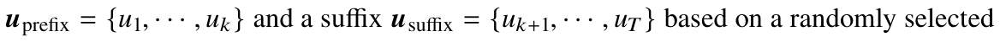
position k (1 ≤ k ≤ T). Unlike the standard language modeling task, in a prefix decoder, only the token loss from the suffix portion of the text is included in the training loss. The training objective of this task can be formally expressed as:

The prefix language modeling task is highly similar to the input–output prediction setting in NLP tasks. However, because the loss from the input tokens is not included in the training loss function, the performance of prefix language modeling tends to be slightly inferior to that of standard language modeling when trained on datasets of the same size [181].
Another variant of language modeling is the fill-in-the-middle (FIM) task [182]. This task aims to train the model to fill in missing information in the middle by reordering the input sequence. Specifically, an input sequence u. is divided into three parts: the prefix uprefix., the middle part umiddle., and the suffix usuffix. In this task, the model needs to autoregressively predict the content of the middle part (umiddle.) based on a new sequence composed of the prefix and suffix (uprefix ⊕ usuffix.). In this way, the model can learn the ability to fill in the missing information in the middle. The specific training function can be expressed as follows:

Generally speaking, the cloze task can be used to assist standard language modeling tasks, enabling the model to recover the content in the middle part of the text. It can be used for training code models and enhance the model’s performance in applications such as code completion.
LlamaForCausalLMclass LlamaForCausalLM(LlamaPreTrainedModel):
def __init__(self, config):
super().__init__(config)
self.model = LlamaModel(config)The following code presents the method for calculating language modeling loss using detailed configuration of the LLaMA model, LlamaModel, has already been presented earlier. LlamaForCausalLM adds a self.lm_head prediction head on top of it, which is used to map the model output to the vocabulary dimension.
self.vocab_size = config.vocab_size
# Map the hidden state of the last layer to the vocabulary.
self.lm_head = nn.Linear(config.hidden_size, config.vocab_size,
bias=False)def forward(
self,
input_ids: torch.LongTensor = None,
attention_mask: Optional[torch.Tensor] = None,
position_ids: Optional[torch.LongTensor] = None,
labels: Optional[torch.LongTensor] = None,
**kwargs,
) -> Union[Tuple, CausalLMOutputWithPast]:
outputs = self.model(
input_ids=input_ids,
attention_mask=attention_mask,
position_ids=position_ids,
)
# Feed input into LlamaModel to obtain the hidden states of the last layer.hidden_states = outputs[0]
# Feed hidden states into mapping head to convert them into the
probability of each token in the vocabulary.logits = self.lm_head(hidden_states).float()
loss = None
if labels is not None:
# Compute predicted probability of tokens from position 2 to t
based on tokens from position 1 to t-1. shift_logits = logits[..., :-1, :].contiguous()
shift_labels = labels[..., 1:].contiguous()
loss_fct = CrossEntropyLoss()
# Flatten tokens of different sequences in a batch.
shift_logits = shift_logits.view(-1, self.config.vocab_size)
shift_labels = shift_labels.view(-1)
shift_labels = shift_labels.to(shift_logits.device)
# Compute the cross-entropy loss.
loss = loss_fct(shift_logits, shift_labels)
return CausalLMOutputWithPast(
loss=loss,
logits=logits,
)→ → → →
6.1.2Denoising Autoencoding#
In addition to the traditional language modeling task, the denoising autoencoding task is another commonly used pre-training task for language models, which is widely used in pre-trained language models such as BERT and T5 [11, 67]. In the task, the input text undergoes a series of random replacements or deletions to form corrupted text ˜u.
The model’s training objective is to restore the original text based on the corrupted text, which can be expressed by the following formula:

Compared to language modeling, the implementation of the denoising autoencoding task is more complex, requiring the setup of additional optimization strategies, such as token replacement proportions and strategies. However, in contrast to language modeling tasks, the use of denoising autoencoding for pre-training LLMs is still relatively limited. Representative models using denoising autoencoding include T5 and GLM-130B.
6.1.3Mixture-of-Denoisers#
The mixture-of-denoisers, also known as UL2 loss [183], unifies pre-training tasks by treating both language modeling and denoising autoencoding objectives as different types of denoising tasks, including S-denoiser, R-denoiser, and X-denoiser.
Specifically, the S-denoiser uses the same objective as prefix language modeling (Eq. 6.2), aiming to train the model to generate suffix text based on prefix information. In contrast, the R-denoiser and X-denoiser are more aligned with the denoising autoencoding task objectives (Eq. 6.4), differing only in the span of masked fragments and the corruption ratio. The R-denoiser masks approximately 15% of tokens in the sequence, with each masked fragment containing only three to five tokens. On the other hand, the X-denoiser uses longer segments (over 12 tokens) or a higher corruption ratio (around 50%), requiring the model to more accurately restore the original information. This setting increases task difficulty, which helps improve model performance.
During the training of the mixture-of-denoisers, the input sentence begins with special tokens ([R], [S], [X]), which guide the model to restore the corrupted tokens accordingly. This approach is applied for training LLMs such as UL2 [183] and PaLM- 2 [184].
6.2Optimization Settings#
Similar to the optimization of traditional neural networks, the batch gradient descent algorithm is commonly used for training model parameters in the large-scale pre-training. Furthermore, adjusting the learning rate and applying gradient optimization strategies can
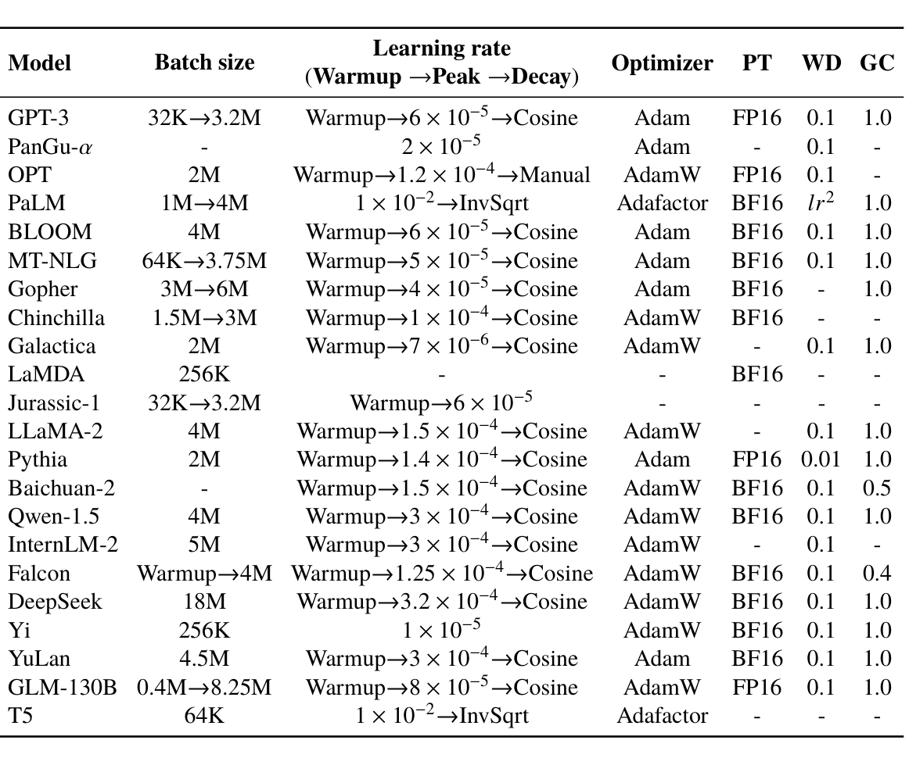
Learning rate
Batch size
Optimizer PT WD GC Model
(Warmup →.Peak →.Decay)

32K→3.2M
Adam
FP16 0.1 GPT-3
Adam
AdamW
FP16 0.1 OPT
lr2.
Adafactor BF16
PaLM
1M→4M
Adam
BF16 0.1 BLOOM
MT-NLG
64K→3.75M
Adam
BF16 0.1
Adam
Gopher
3M→6M
BF16
Chinchilla
AdamW
1.5M→3M
BF16
Galactica
AdamW
LaMDA
256K
BF16
Jurassic-1
32K→3.2M
LLaMA-2
AdamW
Adam
FP16 0.01 1.0 Pythia
AdamW
BF16 0.1 Baichuan-2
AdamW
BF16 0.1 Qwen-1.5
InternLM-2
AdamW
Warmup→4M Warmup→1.25 × 10-4.→Cosine
AdamW
BF16 0.1 Falcon
AdamW
BF16 0.1 DeepSeek
AdamW
BF16 0.1 Yi
256K
Adam
BF16 0.1 YuLan
4.5M
GLM-130B 0.4M→8.25M
AdamW
FP16 0.1 T5
Adafactor
further enhance training stability. To alleviate model over-fitting, a series of regularization methods need to be used during training. Below, we will provide a detailed overview of training optimization settings for LLMs.
For the reader’s convenience, Table 6.1 summarizes the training optimization settings of several common models.
6.2.1Batch-Based Training#
In large-scale pre-training, the batch size is typically set to a large number, such as 1M to 4M tokens, to improve training efficiency and stability. Many models adopt dynamic batch adjustment strategies, gradually increasing the batch size until it reaches the million level. For example, the batch size for GPT-3 increases from 32K tokens to 3.2M tokens, while the batch size for PaLM (540B) increases from 1M tokens to 4M tokens. Extensive research shows that dynamically adjusting the batch size can effectively stabilize the
training process of LLMs [107]: using small batches at the beginning of training allows the loss to drop rapidly, while using large batches in the late stages steadily decreases the loss, facilitating better convergence.
6.2.2Learning Rate#
In the pre-training phase of LLMs, learning rate adjustment strategies are commonly employed, typically consisting of a warm-up phase followed by an annealing phase. The warm-up phase typically accounts for 0.1–0.5% of the total training steps, after which the learning rate begins to decay. At the initial stage of training, since the parameters are randomly initialized and the gradients tend to be large, a small learning rate is used to ensure stable training. A linear warm-up strategy is often adopted to gradually adjust the learning rate.
Specifically, the learning rate starts from a very small value (e.g., 0 or 1 × 10-8.) and increases linearly until it reaches a predefined maximum threshold. When using a larger learning rate, the model converges more quickly, and this maximum threshold is usually set between 5 × 10-5. and 1 × 10-4. For example, the maximum learning rate for GPT-3 is set to 6 × 10-5., while for LLaMA, it is set to 1.5 × 10-4. After reaching the maximum threshold, the learning rate gradually decays to prevent oscillation around the suboptimal point. Typically, the learning rate would decay to about 10% of its maximum value. Common decay strategies include linear decay, cosine decay, and inverse square root decay, with corresponding learning rate changes illustrated in Fig. 6.2.

6.2.3Optimizer#
The training of LLMs typically uses the Adam optimizer [185] and its variants, such as AdamW [186]. The Adam optimizer utilizes the momentum of the gradients
as the direction for parameter updates. It replaces the current gradient with a weighted average of gradients from past update steps, thus reducing the oscillations in loss caused by sample randomness. Additionally, Adam employs an adaptive learning rate method by correcting the gradient using the second moment (which can be viewed as normalizing with the variance), preventing the issue of excessively small gradients that can make the model difficult to optimize. Adam introduces three hyper-parameters, typically set

AdamW
builds upon Adam by introducing a weight decay technique (discussed in Sect. 6.2.4). Moreover, researchers have proposed the Adafactor optimizer [187], a variant of Adam that is more memory-efficient during training. Common hyper-parameter settings for Adafactor include: β1 = 0.9. and β2 = 1.0 - k-0.8., where k represents the training step. Models such as PaLM and T5 use Adafactor as their training optimizer.
6.2.4Stable Optimization Techniques#
In the training of language models, instability is a common issue. Below are several techniques commonly used in deep learning to improve training stability.
- Gradient clipping. Gradient explosion is a frequent phenomenon during training. To alleviate this issue, the gradient clipping method is employed to constrain the gradient within a small value range: when the gradient norm exceeds a given threshold, it is clipped to a given threshold. In LLM training, the clipping threshold is typically set to 1.0.
- Training checkpoints. To prevent abnormal situations during training, another practical strategy is to set up checkpoints at fixed intervals. When abnormal behavior occurs during training (e.g., a sudden increase in loss), the model can be recovered from the previous checkpoint, skipping the problematic data.
- Weight decay. Regularization techniques can also be introduced during training to stabilize the process and improve the model’s generalization ability. In AdamW, weight decay is applied by introducing a decay coefficient during parameter updates, typically set to 0.1.
- Dropout. Traditional deep learning methods often use dropout to alleviate over-fitting by randomly setting some neuron outputs to zero during training, increasing model robustness. However, since LLMs are trained on massive datasets and include normalization modules in their architectures, over-fitting is less of a concern. Therefore, dropout is rarely used in large model pre-training.
6.3Scalable Training Techniques#
As model parameters and data continue to increase, efficiently training LLMs with limited computational resources has become a key technical challenge. It has become a key technical challenge to efficiently train LLMs with limited computational resources. There are two main issues to address: first, how to improve training efficiency; and second, how to conduct cross-GPU distributed training. This section will introduce several common scalable training techniques, including 3D parallel training, ZeRO, activation recomputation, and mixed-precision training.
6.3.13D Parallel Training#
The 3D parallel strategy is essentially a combination of three commonly-used parallel training techniques: data parallelism, pipeline parallelism, and tensor parallelism, as illustrated in Fig. 6.3 (ZeRO in Fig. 6.3(b) will be introduced in Sect. 6.3.2). In some cases, the term model parallelism is also used to refer to both tensor parallelism and pipeline parallelism.
- Data parallelism. Data parallelism is a method to improve training throughput. It copies model parameters and optimizer states across multiple GPUs, and then evenly allocates the training data among these GPUs. In this way, each GPU only needs to process its allocated data, then performs forward and backward propagation to compute gradients. Once all GPUs have completed their computations, gradients from different GPUs will be averaged to obtain a global gradient for updating the model parameters on all GPUs. As shown in Fig. 6.3a, four data samples are split into two parts, each computed by a separate GPU. The gradients from both GPUs are averaged before updating the model, which is equivalent to performing a gradient update with a batch size of 4. Since gradient computation can be done independently on different GPUs, the data parallelism mechanism has high scalability and can improve training efficiency by increasing the number of GPUs. The implementation of data parallelism is relatively simple, and most deep learning libraries, such as TensorFlow and PyTorch, provide support for this strategy. Output Output GPU GPU Input Input (a) Data Parallelism (b) ZeRO Output
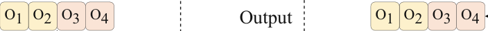
Output
GPU GPU Input
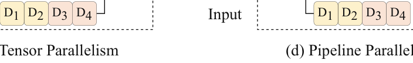
Input
(c) Tensor Parallelism
(d) Pipeline Parallelism
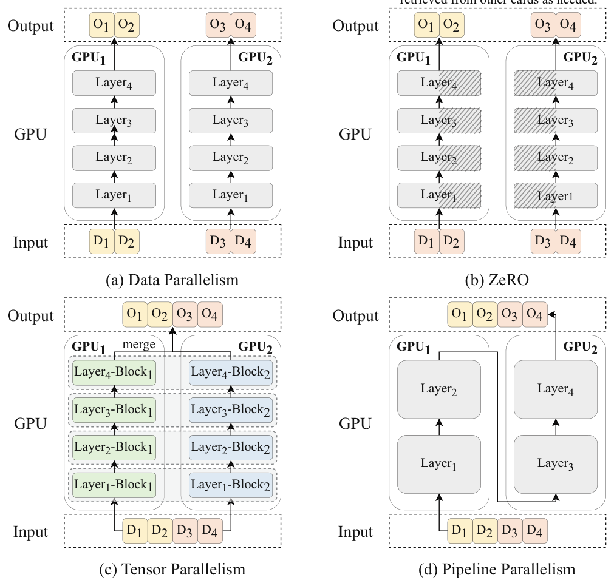
- Pipeline parallelism. Pipeline parallelism aims to distribute model parameters across different GPUs. In practice, consecutive layers of a Transformer model can be loaded onto the same GPU to reduce the cost of transferring hidden states or gradients For example, in Fig. 6.3d, layers 1-2 of the Transformer model are between GPUs. deployed on GPU 1, while layers 3-4 are deployed on GPU 2. However, a simple pipeline schedule does not achieve true parallelism. In the case of Fig. 6.3d, GPU 1 needs to wait for the backward propagation results from GPU 2 after its forward pass to continue with
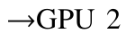
gradient propagation. This leads to a serial operation of “GPU 1 forward
forward →.GPU 2 backward →.GPU 1 backward,” significantly reducing GPU efficiency. To address this issue, pipeline parallelism is often optimized by combining it with the
gradient accumulation technique. The main idea behind gradient accumulation is to compute the gradients for a batch but not update the model parameters immediately. Instead, the gradients are accumulated over several batches before updating the model, allowing for the simulation of larger batch sizes without increasing memory consumption. When using gradient accumulation in pipeline parallelism, after GPU 1 completes the forward pass of the first batch, it does not need to wait for the backward pass and can proceed with the forward pass of subsequent batches, thus improving the efficiency of the pipeline.
- Tensor parallelism. Tensor parallelism and pipeline parallelism are two techniques for distributing large model parameters across multiple GPUs. While pipeline parallelism focuses on assigning different layers of the model to different GPUs, tensor parallelism operates at a finer granularity by partitioning the parameter tensors (i.e., parameter matrices), enabling more efficient use of the parallel computing power of multiple GPUs. Specifically, for a matrix multiplication HW ., the parameter matrix W . can be split into two submatrices, W 1. and W 2., so that the original computation can be written as HW 1 ⊕ HW 2. The submatrices W 1. and W 2. can be placed on two different GPUs, and the two matrix multiplications can be executed in parallel. Finally, the outputs from both GPUs are combined through inter-GPU communication to form the final result. A common tensor parallelism strategy is to partition the attention parameter matrices W Q., W K ., WV ., and W O. (Eq. 5.2~5.6) and the FFN matrices WU. and W D. (Eq. 5.8). Currently, tensor parallelism is supported by several open-source libraries. For example, Megatron-LM [23] supports tensor parallelism by splitting parameter matrices into blocks along rows and columns.
6.3.2Zero Redundancy Optimizer#
The zero redundancy optimizer (ZeRO), introduced by DeepSpeed, addresses the issue of model redundancy in data parallelism, where each GPU needs to store a complete copy of the model parameters. As shown in Fig. 6.3a, in data parallelism, each GPU stores the same copy of the model, including model parameters and optimizer states. During the forward pass, only the parameters of the current layer are involved in computation, while parameters from other layers remain unused, leading to significant memory redundancy.
This also limits the amount of data that can be processed during the forward pass on each GPU, thus reducing training efficiency. To solve this problem, ZeRO retains only a portion of the model parameters and optimizer states on each GPU and retrieves the rest from other GPUs when needed. As illustrated in Fig. 6.3b, the model parameters are split between two GPUs. When performing computation for the first layer, each GPU fetches the parameters from the other GPU. Once the computation is complete, the corresponding memory resources are released, reducing memory redundancy. ZeRO provides three different stages for partitioning model parameters and optimizer states, which are described in detail in Sect. 6.4.4. PyTorch has also implemented a similar technique known as fully sharded data parallel (FSDP), which achieves a similar effect to ZeRO.
6.3.3Activation Recomputation#
Activation recomputation, also known as gradient checkpointing, is a technique used to optimize memory consumption during backpropagation. Specifically, given an optimization function Y = XW ., the value of X . is needed to compute the gradient of W . during backpropagation. Hence, the value of X . (often referred to as activations) must be stored during the forward pass. However, storing the activations for every layer consumes a large amount of memory (detailed memory consumption can be found in Sect. 6.4.4). To address this issue, activation recomputation only stores part of the activations during the forward pass, then recomputes them during the backward pass, thus saving memory at the cost of additional computation. In large model training, activation recomputation typically saves the input to each layer of the Transformer model and recomputes the corresponding activations during backpropagation. This strategy significantly reduces memory usage, though it introduces some computational overhead.
6.3.4Mixed-Precision Training#
Early pre-trained language models (such as BERT) primarily use single-precision floating-point format (FP32) to represent model parameters and perform optimization calculations. In recent years, to enable the training of large-scale models, researchers have developed mixed-precision training, a technique that uses both half-precision (2 bytes)
and single-precision (4 bytes) floating-point formats in computations. This approach effectively halves memory usage and doubles training efficiency. Specifically, to maintain precision, a copy of the original 32-bit model parameters should be retained. During training, the 32-bit parameters are first converted to 16-bit precision, and then the forward and backward propagations are performed using 16-bit precision. Finally, during parameter updates, the optimization is applied to the 32-bit model. Since the majority of time in model training is spent on forward and backward propagation, mixed precision training can significantly enhance training efficiency. A common format for half-precision floating-point numbers is FP16, which consists of 1 sign bit, 5 exponent bits, and 10 fraction bits, representing a range from -.65,504 to 65,504. Further, researchers have developed a new half-precision floating-point format, BF16 [188], specifically designed for deep learning scenarios. BF16 consists of 1 sign bit, 8 exponent bits, and 7 fraction bits, allowing for a numerical range on the order of 1038. Compared to FP16, BF16 offers a broader representation range and has been widely used in the training of LLMs. Notably, recent GPUs, such as the NVIDIA A100, equipped with tensor cores that support 16-bit precision and mixed-precision training.
6.4Model Parameter Calculation and Efficiency Analysis#
This section will introduce how to calculate the number of parameters in LLMs and provide estimation methods for the computational cost, training time, and memory usage during model training. This allows readers to estimate the time, GPU memory, and other computational resources required for training.
6.4.1Parameter Calculation#
Since mainstream LLMs currently adopt a causal decoder architecture based on the Transformer, we will next use the LLaMA model as an example to detail the method for calculating its number of parameters. The calculation methods for other models can be referenced similarly. First, assume the vocabulary size is V, the model contains L layers of decoders, the dimension size of the hidden state is H, and the dimension size of the intermediate state in the feed-forward network layer is H . We mainly focus on calculating the number of parameters in the following five parts:
- Input embedding layer. First, the input embedding layer (E ∈ RV×H .) maps each token in the vocabulary to an H-dimensional vector, so the input embedding layer has V H. parameters.
- Multi-head attention layer. The standard attention mechanism includes linear transformation matrices for the query (W Q ∈ RH×H .), key (W K ∈ RH×H .), and value (WV ∈ RH×H .), each of which contains H2. parameters, so this part requires 3 × H2. parameters. Additionally, an extra linear transformation is needed to map the concatenated output of multiple heads to the final output (W O ∈ RH×H .), which requires another H2. parameters. Therefore, the multi-head attention layer requires a total of 4× H2. parameters.
- Feed-forward network layer. The feed-forward network layer in LLaMA consists of three linear transformations. The first two linear transformations (WU ∈ RH×H . and W G ∈ RH×H .) map the input from H dimensions to H . dimensions, requiring 2 × HH . parameters. The final linear transformation (W D ∈ RH ×H .) maps the output back from H . dimensions to H dimensions, requiring HH . parameters. Thus, the feed-forward network layer requires a total of 3 × HH . parameters.
- Normalization layer. Each decoder layer also contains two RMSNorm modules, which are used to normalize the input of the multi-head attention layer and the feed-forward network layer, respectively, requiring a total of 2 × H. parameters. Additionally, the output of the final layer also needs to be normalized, which requires an additional H parameters.
- Output layer. The output layer contains a linear transformation (W L ∈ RH×V .) that maps the decoder output to a V-dimensional (vocabulary size) vector. This linear transformation requires V H. parameters. Considering the input embedding layer, output layer, and the multi-head attention layer (L layers), feed-forward network layer (L layers), and normalization layer (L layers), the total number of parameters in the LLaMA model can be calculated as:

To calculate the total number of parameters for the LLaMA (7B) model, we substitute the given values V = 32,000., L = 32., H = 4096., and H = 11,008. into the formulas derived
earlier for each component of the model.
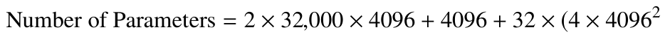
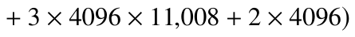
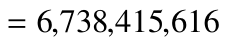
The calculated number of parameters is exactly the same as the actual number of parameters of the LLaMA (7B) model.
6.4.2Estimation of Training Cost#
The training cost is calculated by the number of floating-point operations (FLOP) that a model needs to perform during training, including operations such as addition, subtraction, multiplication, and division of floating-point numbers, as well as exponential functions, logarithmic functions, and trigonometric functions. In Transformer-based architectures, the majority of computation is concentrated in multi-head attention and linear transformation calculations. In contrast, the amount of computation required for normalization, output mapping, and rotary positional encoding is relatively small, and no computation is required for the input embedding layer. Therefore, these parts are omitted in the subsequent analysis. To analyze the computation of multi-head attention and linear transformations, the following hyper-parameters are further defined: the total number of model parameters is P, the batch size is B, and the length of the input sequence is T. Therefore, the total number of training tokens is C = BT .; the multi-head attention module contains N heads, and the dimension of each head is D, so the dimension of the hidden state H satisfies the relationship H = N D. Other notations are consistent with those in Sect. 6.4.1.
Tips (Computational Cost of Matrix Multiplication)
The computational cost required to multiply matrix A ∈ Rn×m. and matrix B ∈ Rm×p. is
2nmp.
- Multi-head attention. First, let’s analyze the computational cost of the multi-head attention operation. For batched data, the corresponding query, key, and value tensors (Eq. 5.2) need to be computed, i.e., Q, K, V ∈ RB×T×H . Considering the multi-head computational cost, these tensors are split and transposed to obtain ˜Q, ˜K, ˜V ∈ RB×N×T×D. In the attention calculation (Eq. 5.5), the matrix multiplication of ˜Q ˜K requires 2BT2N D. √ floating-point operations. Then, the standardization operation (scaling by D.) requires BT2N. floating-point operations, and the softmax operation, which involves exponentiation, summation, and normalization, requires a total of 3BT2N. floating-point operations. Finally, multiplying the result of the softmax operation by ˜V . requires another 2BT2N D. floating-point operations. Therefore, the total number of floating-point operations for the multi-head attention calculation is 4BT2N D + 4BT2N. Since the computational cost for backpropagation is approximately twice that of forward propagation,2 the total computational cost of multi-head attention in the model can be expressed as:

- Linear transformation. Next, let’s derive the training cost for the linear transformations, which mainly include the four mapping calculations in the attention layer (Eqs. 5.2, 5.3, 5.4, and 5.6), the transformation in the feed-forward network layer (Eq. 5.8), and the output layer mapping (Eq. 5.11). Take the up-projection operation in the feed-forward network layer X WU. as an example, where the intermediate state is X ∈ RB×T×H . and the up-projection matrix is WU ∈ RH×H . Thus, the forward pass requires 2BT HH . floating-point operations, and the backward pass requires 4BT HH . floating-point operations, for a total of 6CHH . floating-point operations, where C = BT . is the total number of training tokens. As we can see, the computational cost of the linear transformations is related to the number of matrix parameters. Therefore, the total computational cost for all linear transformations in the Transformer can be expressed as follows:

If activation recomputation is used during training (as discussed in Sect. 6.3.3), an additional forward pass is required during backpropagation. Thus, the total computational cost will become:

Lastly, by comparing Eqs. 6.5, 6.6, and 6.7, it can be found that the computational cost T 6H . of that in linear transformation. For ease of of multi-head attention is approximately
2In Transformer based models, most operations are binary (e.g., matrix multiplication), and gradients of the
analysis, we assume here that in the LLM training scenario, the sequence length T is less than the hidden state dimension H, i.e., T < H. Therefore, the computational cost of multi-head attention is at most 1
6. of the computational cost for linear transformation, so its impact is relatively small. According to Eq. 6.5, the parameters of linear transformations usually account for more than 95% of the total parameters. Hence, the number of parameters P can directly replace the number of parameters in linear transformations. In this case, the total computational cost of a model with parameter number P during pre-training on C tokens can be estimated by the following equation:
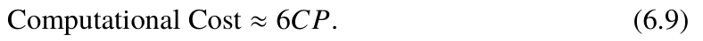
Furthermore, if activation recomputation is used, the total computational cost is approximately 8CP.
For example, when training LLaMA (7B), its parameter number is P ≈ 6.74 × 109. Assuming that the total number of tokens in the training data is C = 1 × 109. and activation recomputation is not used, the total floating-point operations during the training
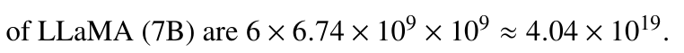
6.4.3Training Time Estimation#
During training, the consumption of training time involves multiple components, primarily including floating-point operations, data read and write, and multi-process synchronization. Among these, floating-point operations are the most time-consuming part of the training process. Therefore, the training time can be roughly estimated based on the formula for training computational cost (Eq. 6.9) and the floating-point computational capability of the GPU. The estimation formula is as follows:
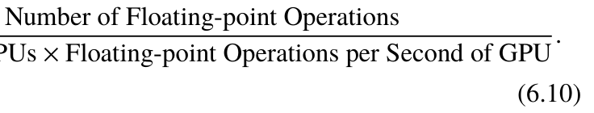
.Training Time =
Number of GPUs × Floating-point Operations per Second of GPU .
In practice, the floating-point operations per second (FLOP/s) of a GPU typically range from 30 to 70% of its theoretical peak performance, which is often influenced by various factors. Taking the pre-training of LLaMA (65B) as an example, its parameter number is P = 6.5 × 1010., with tokens C = 1.4 × 1012. Due to the use of activation recomputation, the total computational cost is approximately 8CP = 7.28 × 1023. During
pre-training, 2,048 A100 GPUs were used, with each A100 GPU capable of performing up to 3.12 × 1014. FLOP/s.3 Here, it is assumed that each GPU can achieve a practical performance of 2 × 1014. FLOP/s during training. Based on the above formula, it can be calculated that LLaMA (65B) using 2048 A100 GPUs would take approximately 1.78 × 106. seconds to train on 1.4T tokens, which is about 20.6 days. This estimate closely matches the 21 days reported in the paper.
6.4.4Training Memory Estimation#
This subsection discusses how to estimate the memory resources required by the model during training from three aspects.
Memory Consumption of Model Parameters and Optimizers
The memory consumption of model parameters and optimizers refers to the memory overhead of model parameters, model gradients, and optimizer states during the training process. In large-scale model training, mixed-precision training is typically used (see Sect. 6.3.4), where model parameters and gradients are stored in 16-bit floating point, while the Adam or AdamW optimizer state requires storage model parameters, gradient momentum, and gradient variance in 32-bit floating point. Suppose that the model has P parameters, G GPUs are used in training, the degree of data parallelism is ND., the degree of pipeline parallelism is NP., and the degree of tensor parallelism is NT . Based on these definitions, the memory usage of model parameters and optimizer states can be analyzed as follows.
- Without using ZeRO optimization. In this case, since a 16-bit floating point requires 2 bytes and a 32-bit floating point requires 4 bytes, model parameters and gradients each require 2P. bytes of memory, and the optimizer’s model parameters, gradient momentum, and gradient variance each require 4P. bytes of memory. By summing up the memory consumption, each GPU require (2 + 2 + 4 + 4 + 4) · P = 16P. bytes of memory to store the model parameters and optimizer states.
- Using optimizer states partition (ZeRO-1). This scheme distributes the optimizer’s states across GPUs, while each GPU still holds its own copy of the model parameters and gradients. In this case, each GPU requires (2+2) · P + (4+4+4) · P/ND = 4P + 12P/ND.
bytes of memory for storing the model parameters and optimizer states. When the number of GPUs ND. is sufficiently large, the memory usage for storing model parameters and optimizer states is reduced to one fourth compared to the case without ZeRO.
- Using gradient partition (ZeRO-2). The ZeRO-2 scheme builds on ZeRO-1 by further distributing model gradients across GPUs. Thus, each GPU requires 2P + (2 + 4 + 4 + 4) · P/ND = 2P + 14P/ND. bytes of memory for storing model parameters and optimizer states. Similar to the estimation for ZeRO-1, when the number of GPUs is sufficiently large, the memory usage for storing the model and optimizer is reduced to one eighth.
- Using parameter partition (ZeRO-3). ZeRO-3 builds on ZeRO-2 by also distributing model parameters across GPUs. In this case, each GPU requires 16P/ND. bytes of memory for storing model parameters and optimizer states. Compared to the case without
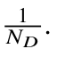
ZeRO-3, the memory usage for storing the model and optimizer is reduced to
- Using tensor parallelism and pipeline parallelism. Tensor parallelism and pipeline parallelism can be used in conjunction with the four schemes above. In this case, we can simply divide the above formulas by NP × NT . to obtain the memory usage of a single GPU. Memory Consumption of Activations During the training of LLMs, the activations (intermediate states) from each layer in the forward pass need to be retained for the subsequent backward pass to compute gradients and update model parameters. This part focuses on analyzing the memory usage of activations, using LLaMA as an example. The notation for model hyper-parameters is consistent with the previous sections. First, let’s consider the memory usage of activations on a single GPU when not using optimizations like tensor parallelism, pipeline parallelism, or activation recomputation.
- Multi-head attention layer. In Eqs. 5.2, 5.3, and 5.4, the linear transformations of queries, keys, and values require storing their input X ., which consumes 2BT H. bytes in total. In Eq. 5.5, multi-head attention computation requires storing the input matrices: Q., K ., and V ., amounting to 6BT H. bytes. In Eq. 5.7, merging the multi-head results requires storing its input Concat(head1, . . . , headN )., which takes up 2BT H. bytes. If the FlashAttention is not used, the result of QK in Eq. 5.5 also needs to be stored, consuming 2BT2N. bytes. However, using FlashAttention eliminates this overhead.
- Feed-forward network layer. LLaMA’s feed-forward network layer uses the SwiGLU activation function (Eq. 5.23), which requires storing its input X ., consuming 2BT H. bytes. Additionally, the values of W G X . and WU X . need to be stored, requiring a total of 4BT H . bytes. Lastly, the output of the SwiGLU activation, used as the input for the subsequent linear transformation (i.e., σ(XWU). in Eq. 5.8), also needs to be stored, consuming 2BT H . bytes. The total memory overhead for this part is 2BT H + 6BT H . bytes.
- Normalization layer. Each decoder layer contains two normalization layers, and each normalization layer requires storing its input (i.e., the input of multi-head attention layers and feed-forward layers), which requires 4BT H. bytes of memory in total.
- Output layer. After passing through L layers, the resulting intermediate representation needs to undergo an additional normalization, which requires the storage of 2BT H. bytes of input. Then, a vocabulary mapping is performed (Eq. 5.11), requiring 2BT H. bytes to store its input Y L. Furthermore, when computing the softmax function, the input Y LW L. needs to be stored. In practice, to improve the precision of the softmax function, the input is typically converted to 32-bit floating-point format for subsequent calculations, requiring 4BTV . bytes. In summary, when not using FlashAttention, the total memory usage for activations is given by the following formula:
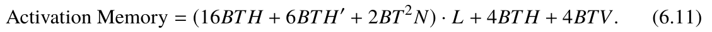
If FlashAttention is used, the memory overhead 2BT2N. can be removed from the above formula, thus reducing the required memory usage.
Next, we will analyze the memory consumption of activation values when using optimization techniques such as pipeline parallelism, tensor parallelism, and activation recomputation. To simplify the analysis process, we omit the derivation when using FlashAttention; to calculate the memory usage with this technique, simply remove the 2BT2N. item from the following formulas.
- Pipeline parallelism. Pipeline parallelism distributes model parameters evenly across different GPUs, so each GPU only needs to store the corresponding activation values. Assuming that the degree of pipeline parallelism is NP., the formula for activation memory usage is as follows:
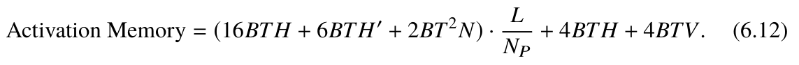
- Tensor parallelism. In tensor parallelism optimization, the linear transformation operations in the multi-head attention layer and the feed-forward network layer can be parallelized by splitting their parameter matrices and distributing them across different GPUs. Therefore, the corresponding activation values can also be distributed to the
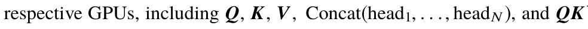
. in the multi-head attention computation, as well as W G X ., WU X ., and σ(XWU). in the feed-forward network layer. However, the inputs of the multi-head attention layer, the feed-forward network layer, and the two normalization layers cannot be split and should be stored on each GPU. Assuming that the parallelism degree of tensor parallelism is NT ., the formula for activation memory usage is as follows:
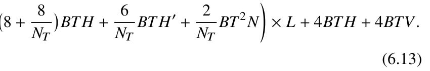
.Activation Memory =
- Activation recomputation. During the training of LLMs, activation recomputation stores only the input of each Transformer layer and the input to the final layer’s softmax function during the forward pass. In the backward pass, activation values are recomputed as needed to reduce memory usage. In this case, the memory usage for activation values can be simplified as:
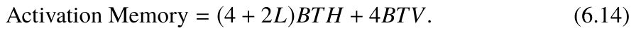
Other Memory Consumption
In addition to the main factors of memory consumption mentioned above, GPU memory usage also includes the following aspects:
- Library kernels. When loading the library kernels, the PyTorch framework consumes approximately 0.8 to 1 GB of memory. This constitutes the basic overhead necessary for the framework to operate.
- ZeRO implementation. When using the ZeRO optimization technique from the DeepSpeed library, memory consumption fluctuates between 1 and 4 GB. The exact amount depends on the stage of the ZeRO scheme being used and the configuration of related parameters. This portion of memory is primarily used to optimize memory management and communication efficiency during training.
- Intermediate results and memory fragmentation. When calculating the softmax function in Eq. 5.11, the specific implementation in the Transformers library introduces additional memory usage, equivalent to twice the input size, requiring 8BTV . bytes. Additionally, due to the discontinuous allocation and release of memory, memory fragmentation can occur during training, typically resulting in an extra 0.5 to 1 GB of memory usage. Example: Estimation of Total Memory Consumption During Training Next, the above formulas will be used to estimate the memory usage during training. Assuming that data parallelism (with ND.), FlashAttention, activation recomputation, and ZeRO-3 are used for efficiency optimization, and the code implementation provided by the Transformers library is utilized, the memory usage per GPU is: Per-GPU Memory ≈ 16P
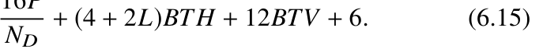
- Memory consumption for LLaMA (7B). In the LLaMA (7B) model, L = 32., and H = 4096. Furthermore, assuming the use of two A800-80G GPUs and a batch size of B = 8., the memory usage for model parameters and optimizer states per GPU is 16P/ND ≈ 5.39×1010. bytes, approximately 50.20 GB. Using the implementation of the Transformers library, the memory usage for model training activations is (4 + 2L) · BT H + 4BTV = (4+2×32)×8×2048×4096+4×8×2048×32,000 ≈ 6.66×109. bytes, or about 6.20 GB. The memory usage for intermediate results is 8BTV = 8 ×8× 2048 × 32,000 ≈ 4.19 × 109. bytes, or about 3.91 GB. Additionally, each GPU requires approximately 6 GB for other memory usage. Thus, when training LLaMA (7B) with two A800-80G GPUs, each GPU
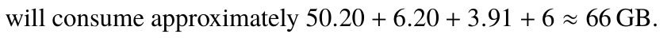
- Estimated memory consumption for different model scales. In the discussion above, it can be observed that the memory consumption for model parameters and optimizer states is the key factor in determining the required training resources. Therefore, in practice, at least 16 times the parameter size P in memory resources is needed to fully train the parameters (if resources are limited, readers can refer to Sect. 7.3 for lightweight training methods). For example, a 13B model requires at least 13 × 16 = 208.GB of memory, which means at least 3 A800-80G GPUs are needed. With approximately 10GB of memory available on each GPU, the maximum batch size B can be set to 2 by substituting into Eq. 6.15. However, in practice, a small batch size may lead to inefficient model training. Therefore, for a 13B model, it is recommended to use at least 4 GPUs. By substituting into the formula, B can be set to 12 to improve training efficiency. Based on the above analysis, the number of GPUs required to train 30B and 65B models can also be calculated, requiring at least 8 GPUs and 16 GPUs (with 80GB memory), respectively.
6.5Pre-training Code Practice#
from dataclasses import dataclass
from dataset.pt_dataset import PTDataset
from transformers import (
AutoModelForCausalLM,
AutoTokenizer,
HfArgumentParser,
TrainingArguments,
Trainer,To help readers better understand the pre-training process, this section will showcase the pre-training code of the LLMBox library and YuLan models. This example is implemented based on Transformers and DeepSpeed. In the sample code below, the train() function covers the main steps of the pre-training process, including the initialization of the model and tokenizer, preparation of training data, and then calls the Trainer class to execute the model training and save the training state.
from transformers.hf_argparser import HfArg
# User input hyper-parameters
@dataclass
class Arguments(TrainingArguments):
# Model architecture
model_name_or_path: str = HfArg(
default=None,
help="The model name or path, e.g., `meta-llama/Llama-2-7b-hf`",
)
# Training dataset
dataset: str = HfArg(
default="",
help="Setting the names of data file.",
)
# Context window size9 )
model_max_length: int = HfArg(
default=2048,
help="The maximum sequence length",
)
# Save only model parameters (do not save optimizer states)
save_only_model: bool = HfArg(
default=True,
help="When checkpointing, whether to only save the model, or also
the optimizer, scheduler & rng state.", )
# Use BF16 mixed precision training
bf16: bool = HfArg(
default=True,
help="Whether to use bf16 (mixed) precision instead of 32-bit.",
)
def train():
# Parse command line arguments
parser = HfArgumentParser(Arguments)
args = parser.parse_args_into_dataclasses()[0]
# Load tokenizer
tokenizer = AutoTokenizer.from_pretrained(
args.model_name_or_path,
model_max_length=args.model_max_length,
padding_side="right",
add_eos_token=False,
)
# Load model and use FlashAttention
model = AutoModelForCausalLM.from_pretrained(args.model_name_or_path,
attn_implementation="flash_attention_2") # Initialize trainer, prepare training data, and start training
kwargs = dict(
model=model,
args=args,
tokenizer=tokenizer,
train_dataset=PTDataset(args, tokenizer),
)
trainer = Trainer(**kwargs)
trainer.train()
trainer.save_model(args.output_dir + "/checkpoint-final")
trainer.save_state()
if __name__ == "__main__":
train()import torch
from datasets import load_dataset
from itertools import chain
class PTDataset:
def __init__(self, args, tokenizer):
self.args = args
self.block_size = self.args.model_max_length
self.tokenizer = tokenizer
self.input_ids = self.process()
self.input_ids = self.group_texts(self.input_ids)
self.labels = self.input_ids.copy()
# Dataset length
def __len__(self):
return len(self.input_ids)
# Get the i-th data item
def __getitem__(self, i):
return dict(input_ids=self.input_ids[i], labels=self.labels[i])
# Data tokenization
def encode(self, examples):
output = self.tokenizer(examples["text"], truncation=True)
return output
# Data batching
def group_texts(self, examples):
concatenated_examples = list(chain(*examples))
total_length = len(concatenated_examples)
if total_length >= self.block_size:
total_length = (total_length // self.block_size) *
self.block_sizeresult = [
torch.stack(concatenated_examples[i:i + self.block_size]) for i in range(0, total_length, self.block_size) ]
return result
# Call dataset loading, tokenization, and batching
def process(self):
input_ids = []
list_data_dict = load_dataset('text',
data_files=self.args.dataset)['train']tokenized_dataset = list_data_dict.map(
self.encode,
batched=True,
remove_columns='text',
)
for example in tokenized_dataset:
if len(example['input_ids']) > 0:
input_ids.append(torch.tensor(example['input_ids']))
return input_idsain_epochs per_device_train_batch_s ize gradient_accumulation_steps_scheduler_type deepspeedtorchrun --nproc_per_node=2 --master_port=5999 pretrain.py \
--model_name_or_path meta-llama/Llama-2-7b-hf/ \
--data_path data/pretrain.json \
--bf16 True \
--output_dir output/llama-7b \
--num_train_epochs 3 \
--per_device_train_batch_size 8 \
--gradient_accumulation_steps 8 \
--evaluation_strategy "no" \
--save_strategy "steps" \
--save_steps 200 \
--save_total_limit 200 \
--learning_rate 2e-5 \
--weight_decay 0. \
--warmup_ratio 0.03 \
--lr_scheduler_type "cosine" \
--logging_steps 1 \
--deepspeed ds_z3_bf16.json \
--tf32 True \
--gradient_checkpointing True→ → The definition of the pre-training dataset class PTDataset is shown in the following code. The process() function covers the main processing steps of the pre-training data, including data loading, tokenization, batching, and other key operations. → → → To further implement data parallel training (single machine, multiple GPUs), one can use the command torchrun to launch the above code. The specific command is shown in the following code. In the first line, the nproc_per_node parameter specifies the number of GPUs for training, and the master_port parameter specifies the communication port during training. The remaining parameters are hyper-parameters specified for training. For example, bf16 is used to determine whether BF16 is used for training, num_tr number of gradient accumulation steps, learning_rate specifies the maximum learning rate, warmup_ratio specifies the proportion of training steps used for learning rate, lr DeepSpeed parameter file (such as the ZeRO stage), and gradient_checkpointing is used to determine whether activation recomputation is used.
e3_max_live_parameters stage3_max_reuse_distanceNext, we illustrate how to set the DeepSpeed training file, which can be used to configure ZeRO hyper-parameters. This file is in JSON format, where zero_optimiza tion includes ZeRO training hyper-parameters. In this parameter dictionary, stage can be set to an integer value of 1, 2, or 3, representing the ZeRO optimization stage. stag
stage3_gather_16b it_weights_on_model_savein ZeRO-3 used to control the cache of model parameters. The smaller the values, the set to false, the checkpoint will be sharded upon saving, and an additional script will be needed to merge them later; otherwise, the checkpoint will not be sharded, but the saving process will take more time.
"bf16": {
"enabled": "auto"
},
"zero_optimization": {
"stage": 3,
"overlap_comm": true,
"contiguous_gradients": true,
"sub_group_size": 1e9,
"reduce_bucket_size": "auto",
"stage3_prefetch_bucket_size": "auto",
"stage3_param_persistence_threshold": "auto",
"stage3_max_live_parameters": 1e9,
"stage3_max_reuse_distance": 1e9,
"stage3_gather_16bit_weights_on_model_save": true
},
"gradient_accumulation_steps": "auto",
"gradient_clipping": "auto",
"steps_per_print": 2000,
"train_batch_size": "auto",
"train_micro_batch_size_per_gpu": "auto",
"wall_clock_breakdown": false
}1 {
Notes
- 1 1https://lifearchitect.ai/ilya/.
- 4 4
- 3 3https://www.nvidia.com/en-us/data-center/a100/.
- 26 26